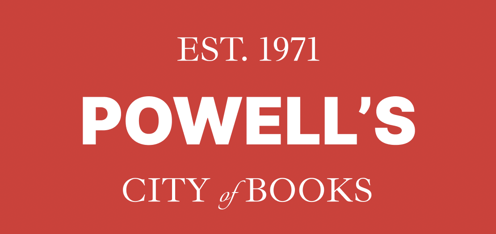
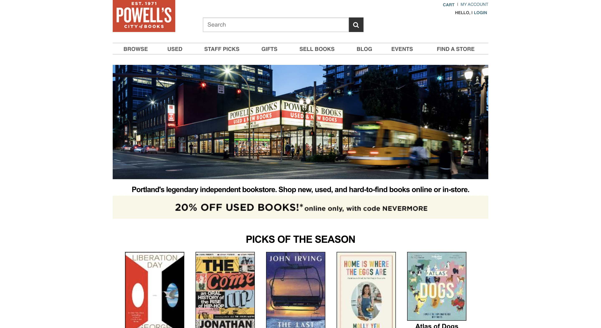
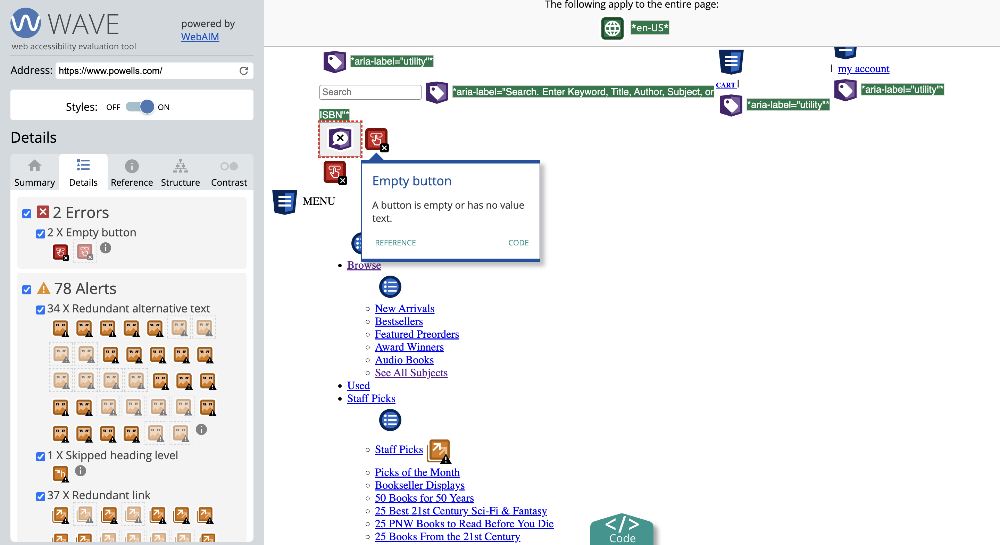
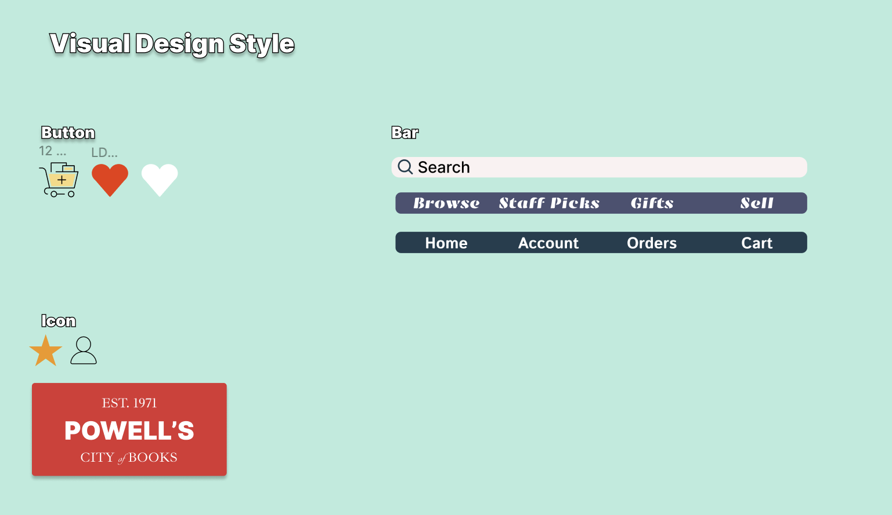
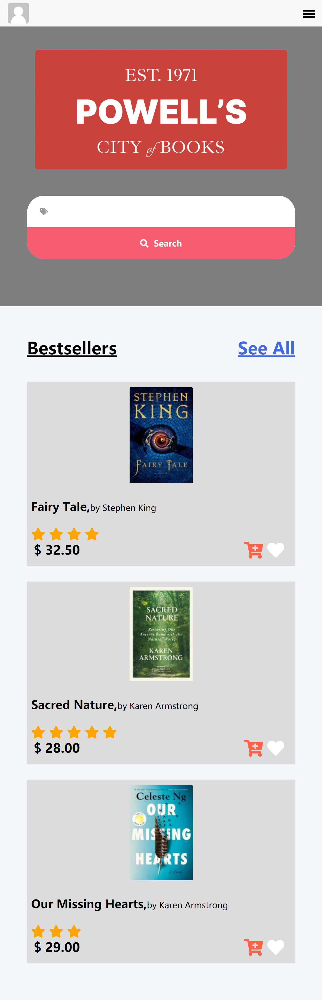
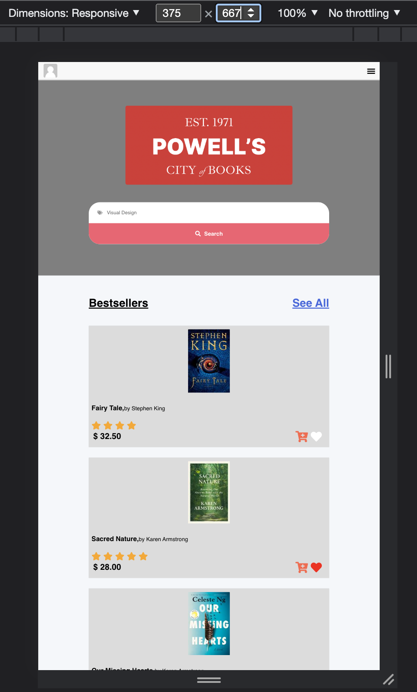
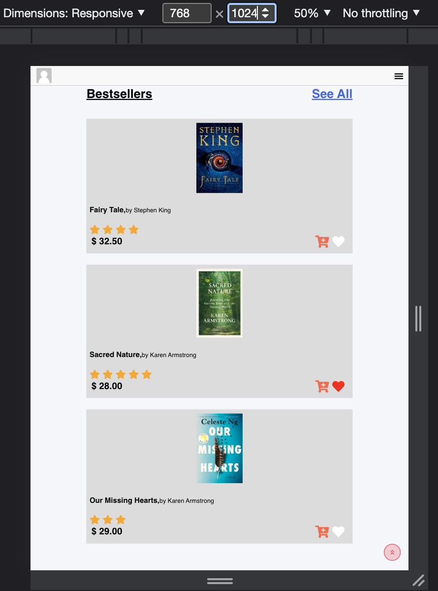

Part 1: Identifying Usability Problems
Goal

As a UI/UX designer, it's very important to gain the skills necessary to analyze and identify flaws in an existing interface, create lo-fi and hi-fi prototypes for various screen sizes, and build a responsive website based on those prototypes.
I chose to redesign an online bookstore website: https://www.powells.com/. The reason I chose this site is that the UI looks relatively old-fashioned and some designs on the webpage are not reasonable enough and cause inconvenience for users.
Finding Problems
This project started with the problem of old-fashioned and unreasonable user interface. To practice the skills of identifying flaws of an existing interface, I mainly focused on 3 different perspectives: usability, memorability and learnability.
Usability
Problem
1.Must click on the book detail page to add this book to cart/wishlist.
2.Too much content clustered in the center of the page.
Solution
1.Display the “add to cart/wishlist” button/icon on the homepage.
2.Reduce the number of pictures of the book displayed on each row, and increase the size of the pictures of the book, so that users can focus on books themselves.
Learnability
Problem
Only books’ titles and authors are displayed on the homepage, no other important information such as ratings, prices, etc. are displayed on the screen, which does not conform to those mainstream online shopping websites, such as Amazon, which makes it difficult for some users to get used to it.
Solution
Display the rating & price of the book on the home page.
Memorability
Problem
1. All words on the homepage are in the same color and font, and some functions' font/icon is too small, such as "cart"/"login"/"my account".
2. The background color of the navigation bar/search bar is the same as that of the homepage (all white), which is difficult for users to distinguish.
Solution
1. On the homepage, the search bar/navigation bar/book listing area is separated by a different background color/font size/font color.
2. Simplify the navigation bar and move the unimportant blog/events/find a store functions to the bottom of the page.
Accessibility

Regarding WAVE's accessibility assessment, I disagree with the "error" part. Since the word "search" is not displayed on the search button, but only a magnifying glass icon is displayed, WAVE believes that this button is empty or has no value text, and cannot indicate the function of this button. But in fact, the "magnifying glass" icon often represents the meaning of "search" in our daily life. So I think this part shouldn't regarded as an real "error".
Part 2: Visual Design Iterations
After identifying flaws in the original interface, I worked on designing the lo-fi and hi-fi prototypes. During this process, I mainly focused on the interaction perspective, which is one of the cores of UI/UX design.
Specifically, considering the rule of match between system and real world, it's
critical to make sure that the new design matches real-world users' expectations. To achieve this
goal, I gained some inspiration from some existing websites/apps, such as Google and Amazon.
First, I simplified the navigation bar (only keep the most important features), expand the size of
the search bar (like Google’s homepage) and book images, and reduce the white space on the left and
right sides of the original web page, which makes it easier for users to find the features they
want, and users can focus on the book itself.
Moreover, I added a shopping cart and a heart icon next to the book image, which allows users to add
their favorite books to the cart/wishlist directly on the homepage. And the rating and price of the
book are displayed next to the book image, and users do not need to click on the book details page
to learn about these. This design is very close to Amazon’s mobile app.
As for the specific design prototypes, screen size and device/platform are two very important
factors. Therefore, we were asked to design a responsive design, that is, a suitable layout for
mobile, tablet, and desktop. First, I designed the lo-fi wireframes with Balsamiq. Then, based on
lo-fi wireframes, I used Figma to get my design closer to the finished product.
Lo-Fi Prototype
Annotations
- The rating and price of the book are displayed next to the book image, and users do not need to click on the book details page to learn about these.
- Added a shopping cart and a heart icon next to the book image, which allows users to add their favorite books to the cart/wishlist directly on the homepage.
- Simplify the navigation bar (only keep the most important features), expand the size of the search bar and book images, and reduce the white space on the left and right sides of the original web page, which makes it easier for users to find the features they want, and users can focus on the book itself.
- PC Side: Book products are showed horizontally.
- Mobile/Tablet Side: Book products are showed vertically.
Visual Design Style Guide

Hi-Fi Prototyping
Annotations
Layout Choice
Flexbox can quickly achieve proportional distribution. When the page needs to adapt to different screen sizes and/or device types, we need to make sure that the elements/components have the appropriate “behavior” in layout, Flexbox is the best choice.
Different Size
- The webpage will automatically adjust the page layout according to the size of the browser window.
- PC side: Due to the wide computer screen, each grid (book product) is placed horizontally.
- Mobile/Tablet side: Since the screen of the mobile phone/tablet is long and narrow, each grid (book product) is placed vertically.
Page Change
- The user clicks the heart icon, which represents the "add to wishlist" feature, and the heart will turn from white to red; when the user clicks again, the heart icon will change from red to white.
- When the user clicks on the picture/text of the book product, a corresponding pop-up window will appear.
Finally, I implemented my responsive webpage using HTML/CSS/JavaScript.
Part 3: Responsive Redesign
https://lazytiger721108.github.io/Assignment2/Full Screen

Change Browser Size

Different Device
Mobile
Tablet
Part 4: Conclusion
In this project, I first learned about the basic design process, including creating lo-fi and hi-fi
prototypes, and used the knowledge and perspectives learned in the class to identify some flaws in
the existing design. As for implementation, I have experience in web development, so this assignment
is also a good opportunity for me to review web dev.
For my redesign, most reviewers think it is more elegant and clean than the original webpage, and my
study is also very in-depth. But some reviewers also made comments on the image size in my redesign,
etc.
A very important lesson is that when building prototypes, I should add sufficient annotations, which
makes my prototypes more comprehensive.
Next, if I have time, I will adjust the color of my website, and use some CSS library, such as
Bootstrap or Ant Design, to make the style of the entire page more consistent.